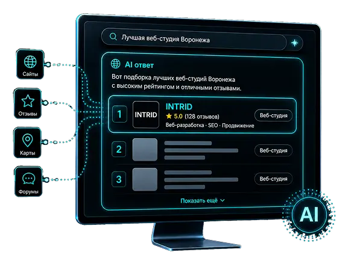

Продвижение в нейросетях (GEO / AI SEO)
Помогаем вашему сайту и бренду чаще появляться в ответах ChatGPT, Алисы, Google AI и других нейросетей. Работаем над сайтом, контентом и информацией о компании, чтобы ИИ правильно понимал, чем вы занимаетесь, использовал ваши материалы как источник и мог включать компанию в рекомендации и подборки.
GEO-продвижение дополняет обычное SEO: вас находят не только в Яндексе и Google, но и там, где пользователь сразу задаёт вопрос нейросети и получает готовый ответ.
Что такое GEO-продвижение простыми словами

Люди всё чаще не просматривают десятки сайтов, а сразу спрашивают у нейросети: «Какую компанию выбрать для ремонта квартиры?», «Где заказать разработку сайта в Воронеже?» или «Какие производители мебели лучшие в России?». ChatGPT, Алиса и другие ИИ-сервисы сами собирают информацию и предлагают пользователю готовый ответ.
GEO (Generative Engine Optimization), или продвижение в нейросетях, – это работа над сайтом, контентом и упоминаниями компании в интернете, которая помогает нейросетям лучше понимать ваш бизнес и чаще использовать достоверную информацию о нём в своих ответах. Мы не можем управлять ответом нейросети напрямую, но можем повысить вероятность того, что она найдёт вашу компанию, правильно её опишет, сошлётся на сайт или включит бренд в подходящую подборку.
Зачем бизнесу продвижение в нейросетях
Раньше потенциальный клиент искал товар или услугу в Яндексе и Google, открывал несколько сайтов и сравнивал предложения. Теперь часть пользователей задаёт тот же вопрос ChatGPT, Алисе, Gemini и другим ИИ-сервисам и получает готовую подборку прямо в ответе.
Если нейросеть ничего не знает о вашей компании или использует устаревшую информацию, потенциальный клиент может просто не увидеть вас среди вариантов.
ИИ-поиск уже стал массовым
пользователей используют ИИ-поиск хотя бы раз в неделю
начинают поиск информации с нейросетей
предпочитают готовый ответ ИИ обычному поиску
переходят по ссылкам из ответов нейросетей на сайты
Проверка присутствия компании в нейросетях
Укажите сайт и ключевой запрос — проверим, встречается ли ваш сайт в источниках ответов ChatGPT, Алисы, Gemini и DeepSeek.
Результат проверки появится здесь
Заполните поля выше и нажмите «Проверить присутствие»
Чем GEO-продвижение отличается от SEO
| Критерий | SEO-продвижение | GEO-продвижение |
|---|---|---|
| Где вас видит клиент | В Яндексе и Google | В ChatGPT, Алисе и других ИИ-сервисах |
| Формат результата | Сайт в поисковой выдаче | Готовый ответ, рекомендация или ссылка на источник |
| Главная задача | Поднять сайт выше в поиске | Повысить видимость бренда в ответах нейросетей |
| Что оптимизируем | Сайт и страницы под поисковые системы | Сайт, контент и информацию о компании |
| Как оцениваем результат | Позиции, трафик и заявки | Упоминания, рекомендации, ссылки и переходы из ИИ |
| Скорость эффекта | Зависит от конкуренции и состояния сайта | Первые изменения – от нескольких недель до нескольких месяцев |
| Результат | Пользователь находит сайт в поиске | Пользователь видит компанию прямо в ответе нейросети |
-
SEO и GEO не заменяют друг друга: хорошо оптимизированный сайт помогает поисковым системам находить и понимать информацию, а GEO расширяет эту работу на ChatGPT, Алису и другие сервисы с ИИ.
Кому подходит продвижение в нейросетях
-
Особенно полезно GEO-продвижение там, где перед покупкой человек изучает варианты, отзывы, цены и репутацию компании
Как мы продвигаем сайт и бренд в нейросетях
Сначала проверяем, что нейросети уже знают о компании, затем приводим в порядок сайт, контент и информацию о бизнесе. После этого регулярно проверяем ответы ИИ и корректируем работу с сайтом на основе фактических результатов.
Продвижение в ChatGPT, Алисе и других нейросетях
Проверяем, как компания представлена в ответах Алисы и AI-функциях Яндекса. Особенно важно для бизнеса, который работает с российской аудиторией. При необходимости вносем корректировки на сайте.
Как мы измеряем результат GEO-продвижения
В обычном SEO отслеживают позиции сайта. При продвижении в нейросетях важнее другое: появляется ли компания в ответах, рекомендует ли её ИИ и использует ли сайт как источник.
Главный показатель:
Доля ответов, в которых нейросети упоминают или рекомендуют вашу компанию по контрольным вопросам.
Что получает клиент
-
Рост видимости компании в ChatGPT, Алисе и других нейросетях
-
Больше упоминаний бренда по целевым вопросам
-
Возможность получать ссылки и переходы из ответов ИИ
-
Более точную информацию о компании в нейросетях
-
Регулярный отчёт с понятной динамикой результатов
Тарифы на GEO-продвижение
Базовое продвижение в трёх основных нейросетях. Проверим текущую видимость компании, найдём основные проблемы и начнём оптимизацию контента и продвижение сайта.
Подходит небольшим компаниям и локальному бизнесу, которые хотят протестировать продвижение в нейросетях и оценить потенциал нового канала.
ЗаказатьКомплексное продвижение сайта одновременно в поисковых системах и нейросетях. Работаем над видимостью в Яндексе и Google, а также над упоминаниями и цитированием компании в ответах ИИ.
Подходит компаниям, которым нужен единый подход к SEO и продвижению в нейросетях.
Заказать с экономией в 6000 ₽Расширенное продвижение бренда сразу в нескольких ИИ-системах: ChatGPT, Алисе, Gemini, DeepSeek, Claude и др.
Регулярно отслеживаем ответы нейросетей, работаем с сайтом, контентом и внешними упоминаниями и корректируем стратегию на основе результатов. Подходит крупным сайтам, интернет-магазинам и брендам, которым важен максимальный охват AI-сервисов.
ЗаказатьСтоимость зависит от тематики, региона, количества запросов и объёма необходимых работ. Точную стоимость определяем после первичного анализа проекта.
- Объединяем GEO-продвижение, SEO, работу с контентом и техническую оптимизацию сайта
- Проверяем реальные ответы нейросетей, а не оцениваем результат субъективно
- Показываем, где компания уже появляется, а где ИИ рекомендует конкурентов
- Работаем с B2B, интернет-магазинами, услугами и другими направлениями бизнеса
Частые вопросы о продвижении в нейросетях
GEO (Generative Engine Optimization) – это продвижение сайта и бренда в ответах нейросетей. Цель – повысить вероятность того, что ChatGPT, Алиса, Gemini, Perplexity и другие ИИ-сервисы найдут достоверную информацию о компании, используют её в ответе, сошлются на сайт или упомянут бренд среди подходящих вариантов.
GEO дополняет обычное SEO: поисковая оптимизация помогает сайту занимать позиции в Яндексе и Google, а продвижение в нейросетях помогает компании становиться заметнее в ответах ИИ.
Нельзя просто добавить компанию в специальный каталог и гарантированно попасть в ответ. Необходимо сделать информацию о бизнесе понятной и доступной: привести в порядок сайт, подробно описать товары и услуги, публиковать полезный экспертный контент, развивать упоминания компании на других площадках и следить за актуальностью данных.
После этого мы регулярно проверяем целевые вопросы и смотрим, как меняется видимость бренда в ChatGPT, Алисе и других нейросетях.
Нет. Конкретный ответ формирует сама нейросеть, поэтому гарантировать определённую рекомендацию или место в ответе невозможно.
Мы можем провести необходимые работы, повысить видимость компании и регулярно измерять результат: количество упоминаний, рекомендаций, ссылок и переходов из ИИ-сервисов.
Первые изменения обычно можно увидеть через 1–3 месяца. Для более устойчивого результата может потребоваться 4–6 месяцев.
- Срок зависит от тематики и уровня конкуренции;
- текущего состояния сайта;
- известности бренда;
- количества достоверной информации о компании в интернете;
- объёма необходимых работ.
Результаты фиксируем в отчётах и сравниваем с показателями на старте продвижения.